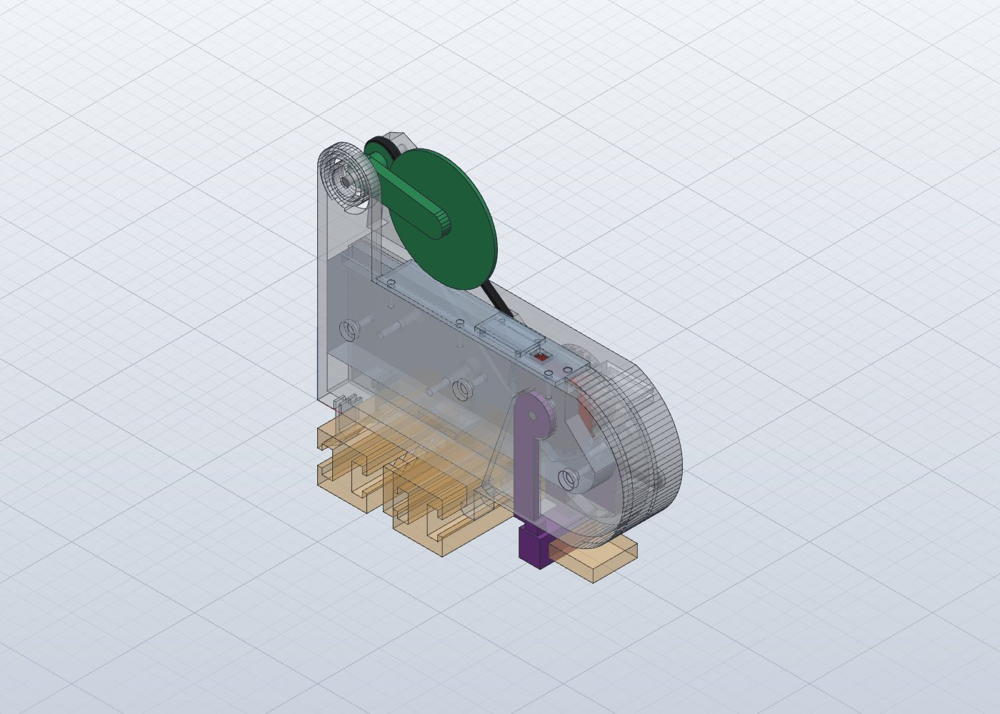
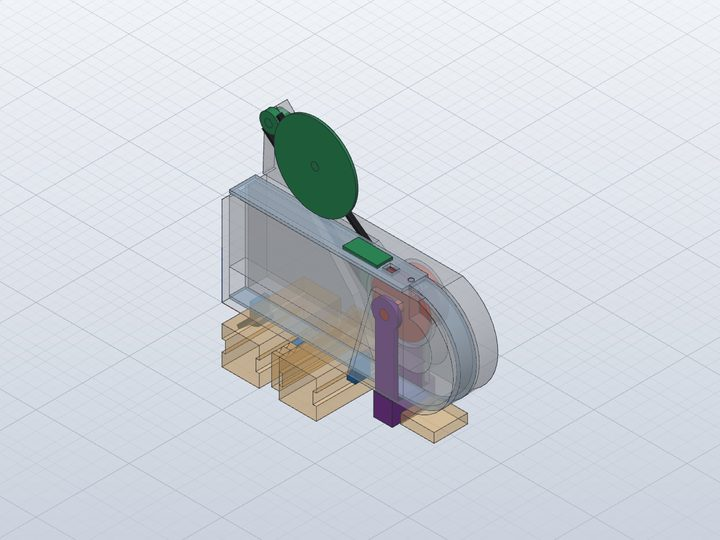
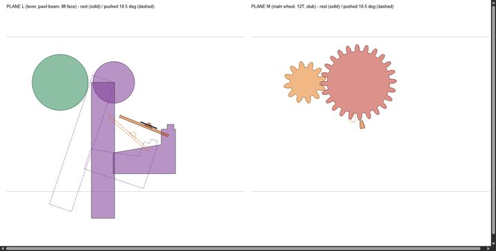
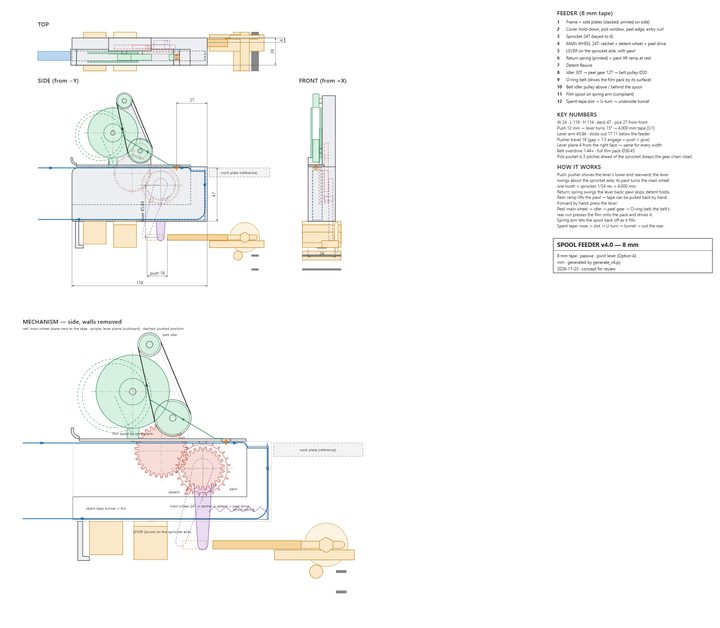
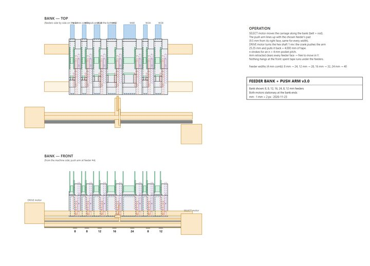
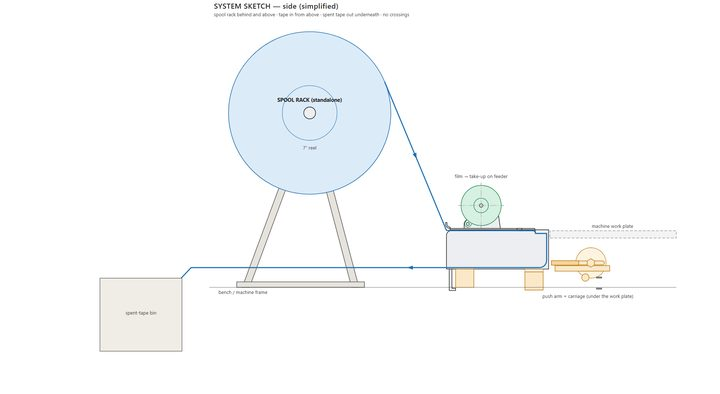

2026 · early stage
Pick-and-Place Machine: Passive Spool Feeder
The first system of a DIY SMT pick-and-place machine: a fully passive, 3D-printable tape feeder driven by a single linear push from the machine, parametric across 8–24 mm tape widths.
- Mechanism design
- Parametric CAD
- Python-generated drawings
- 3D printing
- SMT

I'm designing a pick-and-place machine to assemble my own boards, like the light panel and projector controllers. Each system gets a plain-text spec of numbered requirements and decisions before CAD starts. The first system is the tape feeder, now on its fifth design generation.
Requirements that shaped the feeder
- Completely passive: no motors or electronics in the feeder. One actuator on the machine pushes whichever feeder is selected.
- One linear push does everything: a ~20 mm stroke is reduced inside the feeder (so slop is divided down) to advance the tape 4 mm per stroke, and the same motion overdrives the cover-film peel wheels and take-up spool, with O-rings as slip clutches.
- Position held by a lobed detent and a flexure, with a light printed return spring. The tape can still be fed by hand in either direction.
- Fully 3D-printable: ≤65° overhangs and screws threaded straight into plastic. Printed parts are treated as consumables.
- Parametric across 8, 12, 16 and 24 mm tape, optimized for bank width, with reels on a separate rack.





Drawings generated from code
Every drawing sheet is generated by a Python script from a single parameter set, with clearance checks. The same script produces sheets for all four tape widths, and its parameter file is the input for CAD.






Status: feeder v5 is in its second CAD round, the feeder-bank sheet is awaiting review, and the gantry, pick head, vision and electronics haven't started yet.